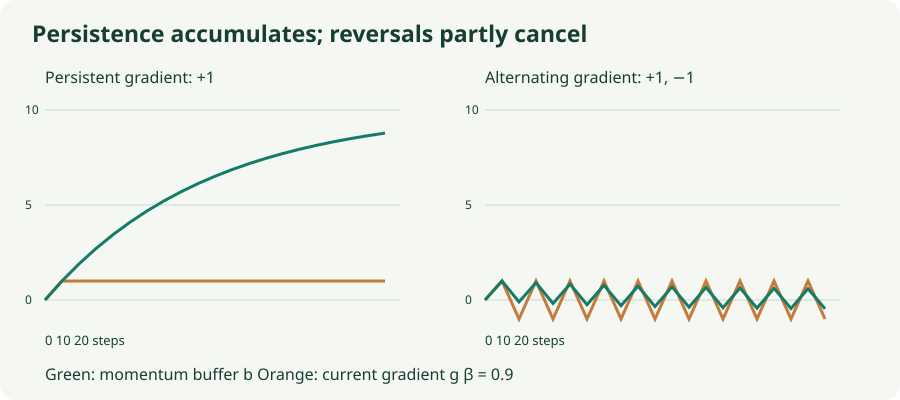

SGD with Momentum: Remembering a Direction
Unroll the momentum buffer, distinguish velocity from displacement, and see why narrow valleys are difficult.
In a narrow valley, SGD repeatedly crosses the steep direction while inching along the flat direction. Momentum gives the optimizer a memory: gradient components that keep pointing the same way accumulate, while rapidly reversing components partially cancel. That is the mechanism behind the familiar “rolling ball” picture—but the actual recurrence is more useful than the analogy.
1. A buffer is a weighted history
Start with a zero buffer $b_0=0$. The heavy-ball convention used in this chapter is
The gradient $g_t$ is evaluated at the current parameter $w_{t-1}$. The coefficient $\beta$ controls how much of the previous buffer survives. The buffer has gradient units; the displacement $\Delta w_t=-\eta_t b_t$ has parameter units. A positive buffer component moves that parameter in the negative direction.
Substitute the recurrence into itself:
Older gradients receive exponentially smaller weights. They were evaluated at older parameter values, so this history provides persistence at the cost of lag. Momentum can keep moving through a point where the current gradient is zero.
For a constant scalar gradient $g$, the buffer tends to $g/(1-\beta)$. At $\beta=0.9$, the long-run buffer is ten times that gradient. Consequently, adding momentum while keeping the same learning rate changes more than smoothness: it can increase the sustained step magnitude substantially.
2. One direction persists; the other reverses
To inspect the buffer alone, feed it the gradient sequence $(1,4)$, $(1,-4)$, $(1,4)$ with $\beta=0.9$ and $\eta=0.1$. These supplied gradients illustrate the recurrence; they are not claimed to be one particular loss’s trajectory.
| Step | Gradient $g_t$ | Buffer $b_t$ | Displacement $-0.1b_t$ |
|---|---|---|---|
| 1 | $(1,4)$ | $(1,4)$ | $(-0.1,-0.4)$ |
| 2 | $(1,-4)$ | $(1.9,-0.4)$ | $(-0.19,0.04)$ |
| 3 | $(1,4)$ | $(2.71,3.64)$ | $(-0.271,-0.364)$ |
At step 2, the first coordinate becomes $0.9(1)+1=1.9$. The second becomes $0.9(4)-4=-0.4$. The earlier positive contribution partly cancels the new negative gradient. This is why a persistent signal and an oscillating signal can receive very different treatment despite using the same $\beta$.

3. Two conventions that look deceptively similar
You will also see an exponential moving average written as $m_t=\beta m_{t-1}+(1-\beta)g_t$. With zero initialization and fixed $\beta$, this is exactly $m_t=(1-\beta)b_t$. If an update uses $-\eta m_t$, matching our $-\eta b_t$ requires changing the learning rate by a factor $1/(1-\beta)$.
Neither notation is intrinsically better. Problems arise when an equation uses one convention and a numerical example or implementation uses the other. The lab and pseudocode here both use the unnormalized buffer $b_t=\beta b_{t-1}+g_t$ with no dampening.
Another convention stores the displacement directly: $v_t=\beta v_{t-1}-\eta g_t$, then $w_t=w_{t-1}+v_t$. For constant $\eta$ this matches $v_t=-\eta b_t$. When the learning rate changes, the displacement recurrence carries old learning-rate factors in its state, whereas applying the current rate to a gradient buffer rescales all stored contributions. Check the implementation before transferring a schedule between these forms.
4. Momentum changes the dynamics, not the loss
For $L(w)=\tfrac12\lambda w^2$ and constant learning rate, combine the parameter and buffer recurrences to eliminate the buffer:
Unlike SGD, the next position depends on two earlier positions. A suitably chosen pair $(\eta,\beta)$ can make progress in flat directions much faster while controlling sharp-direction oscillations. But old direction information can also cause overshoot and slow the response to a turn. Large momentum is not a guarantee of faster convergence.
For a single positive-curvature quadratic mode, $0\le\beta<1$ and $0<\eta\lambda<2(1+\beta)$ give stable heavy-ball dynamics. Stability only means eventual decay in this idealized setting; the transient can still oscillate substantially. Stochastic gradients and a changing neural-network Hessian complicate this picture.
5. Lab: watch the stored direction
This uses the same eight-example quadratic dataset as the SGD chapter. The default full gradient removes sampling noise so you can first see the effect of curvature. The readout exposes the current buffer and the displacement separately.
Momentum in a narrow valley
Compare runs from the same starting point. A control change clears the buffer and resets the trajectory.
- Start without memory: set $\beta=0$, full gradient, $\eta=0.03$, and $\kappa=20$. Inspect progress along the long axis of the contours.
- Add persistence: repeat with $\beta=0.9$. Notice both the increased progress and the overshoot; compare loss over several steps, not just one.
- Add noise: select one sampled row. Near the optimum, the buffer keeps contributions from past noisy batches. More memory does not make those contributions disappear.
6. Where Nesterov momentum differs
The conceptual Nesterov form asks for a gradient at a lookahead point. Using a displacement velocity and a constant rate:
The gradient can correct the direction after accounting for where the stored velocity is about to take us. This is different from simply increasing $\beta$. Libraries may implement an algebraically rearranged form in different parameter coordinates. For example, PyTorch forms a buffer and uses $g_t+\beta b_t$ for its Nesterov update. Do not implement both a lookahead move and that extra term without deriving the intended convention.
The classic Sutskever et al. study discusses momentum and initialization in deep learning. Its results support taking momentum dynamics seriously; they do not turn a particular coefficient into a universal choice.
7. Implementation and state
# Heavy-ball convention used in this chapter.
# b persists across batches and starts at zero.
b = beta * b + grad
parameter -= learning_rate * b
# Corresponding PyTorch configuration:
optimizer = torch.optim.SGD(
model.parameters(), lr=0.03, momentum=0.9,
dampening=0, nesterov=False, weight_decay=0
)The buffer requires one extra scalar per parameter. Save optimizer state when resuming training: restoring model weights alone erases the accumulated direction. If you intentionally reset the optimizer, expect different early dynamics. Also distinguish dampening from weight decay; they modify different parts of the update.
8. Questions worth answering
Yes. The buffer can point against the current gradient because it contains earlier gradients. That may carry the iterate through a small local reversal or create harmful overshoot. The method does not guarantee loss reduction on every step.
Only as a rough memory-scale intuition. Contributions decay geometrically and extend beyond ten steps. Their weights do not form a hard ten-step window, and the unnormalized buffer’s weights do not sum to one.
In the gradient-buffer convention, the new rate multiplies the entire current buffer. The stored history remains, but the displacement scale changes immediately.
Sources
Sutskever et al., On the Importance of Initialization and Momentum in Deep Learning; PyTorch SGD: momentum conventions and Nesterov implementation. The sequence, figures, and quadratic experiments are original teaching examples.